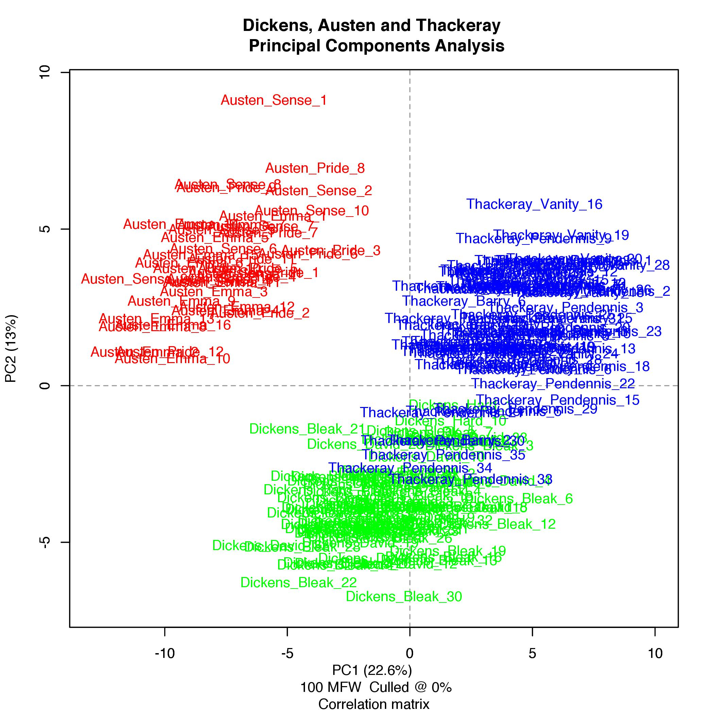

Atrybucja autorska i nie tylko:
analiza tekstów
za pomocą pakietu ‘stylo’
.
Maciej Eder
.
Uniwersytet Pedagogiczny, Kraków
Instytut Języka Polskiego PAN, Kraków
[nawigacja za pomocą strzałek lub spacji]
Spis treści
- atrybucja autorska w 3 słowach
- Ajschylos i jego (?) tragedie
- stylometria wielkoskalowa
Autorski odcisk palca
- niewidoczny gołym okiem
- poza autorską kontrolą
- odporny na imitację, plagiat czy parodię
- np.: frekwencje najczęstszych słów
Najczęstsze słowa
‘It is a truth universally acknowledged, that a single man in possession of a good fortune, must be in want of a wife. . . ’
(J. Austen, Pride and Prejudice)
“the” = 4.25%
“in” = 3.45%
“of” = 1.81%
. . .
Atrybucja autorska
Jeśli mamy:
- a tekst o nieznanym autorstwie
- a korpus porównawczy o znanym autorstwie
to czy można wśród nich odnaleźć ‘najbliższego sąsiada’ spośród kandydatów?
Przykład: Ajschylos
Ajschylos (525–456 p.n.e.)
- siedem zachowanych tragedii
- w tym Prometeusz w okowach
- ... czasem uważany za utwór nieautentyczny
Problemy z autorstwem
- Tzw. ‘problem Zeusa’:
- cześć okazywana Zeusowi w tragediach Ajschylosa
- Zeus potwornym tyranem w Prometeuszu
- Różnice w wersyfikacji między Prometeuszem i innymi sztukami
- Trzeci aktor w jednej ze scen
Trzej tragicy greccy

Problem zbioru otwartego
- Ajschylos
- Sofokles
- Eurypides
- Inny kandydat (?)
To może dystraktor?

Więcej dystraktorów

Napisał czy nie napisał?
- Na wszystkich wykresach Prometeusz wyglądał dziwnie.
- Dystraktory nie zaburzyły ogólnego obrazu.
- Wydaje się, że tragedię napisał ktoś inny.
Pakiet ‘stylo’
- Open-source.
- Graficzny interfejs (GUI).
- Kompletny workflow do analizy tekstu.
- Metody klasyfikacji nienadzorowane (PCA, MDS, ...) i nadzorowane (SVM, NSC, ...).
Pakiet ‘stylo’: demonstracja




Kontakt i linki
opis pakietu ‘stylo’:
https://sites.google.com/site/computationalstylistics
pliki do pobrania:
https://github.com/computationalstylistics/stylo
email: maciejeder [at] gmail.com
Stylometria wielkoskalowa
o tym będzie następnym razem. . .